2025年北京市中考数学真题 · 选择题 第1、2、3、4、5题
第1-8题均有四个选项，符合题意的选项只有一个．
1. 下列图形中，既是轴对称图形又是中心对称图形的是（ ）
A.
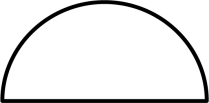
B. 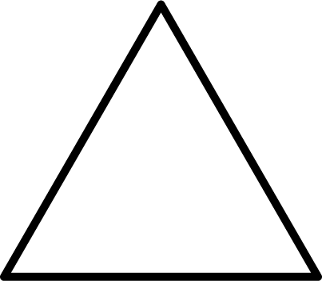
C. 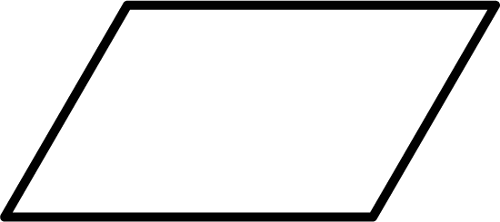
D. 2. 实数a，b在数轴上 对应点的位置如图所示，下列结论中正确的是（ ）
对应点的位置如图所示，下列结论中正确的是（ ）
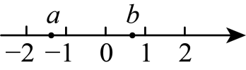
A.
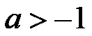
B. 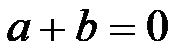
C. 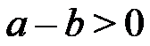
D. 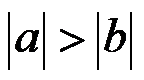
3. 若一个六边形的每个内角都是
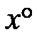
，则x的值为（ ）A. 60B. 90C. 120D. 150
4. 一个不透明的袋子中仅有3个红球、2个黄球和1个白球，这些球除颜色外无其他差别．从袋子中随机摸出一个球，摸出的球是白球的概率是（ ）
A. B. C.  D.
D.
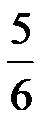
5. 若关于x的一元二次方程
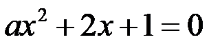
有两个相等的实数根，则实数a的值为（ ）A.  B.
B.
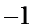
C. 1D. 4